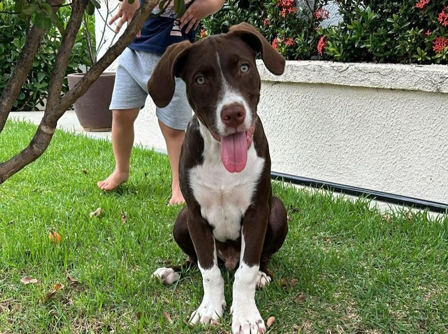

Aproveite a nossa ferramenta de localização de pets, uma solução
eficaz que tem auxiliado incontáveis tutores em todo o Brasil. Realize
uma publicação totalmente gratuita e ganhe acesso imediato ao nosso
abrangente Painel de Publicações.
Total de Pets Resgatados {{ this.totalPets }} e
subindo! 🚀
Últimas histórias felizes
@for (pet of petList; track $index) {
} @empty {
Nenhum pet resgatado ainda :(
}
Como Divulga Pet Funciona?
Karina

Nome: BorisRaça: DesconhecidoEspécie: CachorroSexo: MachoÚltima localização: R. dos Caningás, 5A - Vila Costa e Silva, Campinas - SP, 13081-290, Brazil
Crie uma publicação
Para criar uma publicação, efetue o login. Em seguida, clique em
Publicar PET, adicione uma foto do animal desaparecido, especifique a
situação (Perdido ou Procurando Tutor), inclua observações e a última
localização onde o PET foi visto.
Procure o seu Pet Perdido
Ao clicar em Achados/Perdidos informações sobre o pet serão exibidas
na página. Nessa página, você terá a opção de filtrar as publicações
por situação do pet, espécie ou ID. Isso facilita a busca por
informações específicas.
Pesquisar
Pesquisar por ID
Filtrar por EspécieTodosCachorroGatoPássaroOutros
Filtrar por situaçãoTodosPerdido (Procurando Pet)Encontrado (Procurando tutor)Visto nas proximidades
CHAT para o Resgate
Ao localizar o pet perdido na página de Achados/Perdidos, o tutor pode
clicar no botão Resgatar meu PET para ser direcionado ao CHAT. Lá, ele
pode conversar com quem publicou o pet e obter mais detalhes para
resgatar o pet.